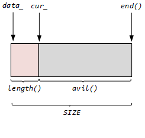

日志¶
LoggerLogFile
日志类 Logger¶
loggering --> Impl --> LogStream --> operator<< --> FixedBuffer --> g_output --> flush

class Logger {
public:
enum LogLevel { TRACE, DEBUG, INFO, WARN, ERROR, FATAL, NUM_LOG_LEVELS};
class SourceFile {
public:
const char* data_; // 文件名首地址
int size_; // 文件的字符个数
...
};
private:
class Impl{
public:
Timestamp time_;
LogStream stream_;
LogLevel level_;
int line_;
SourceFile basename_;
...
};
Impl impl_;
};
整个
Logger内部是靠类 Impl 和类 SourceFile 实现的：
+ 日志等级: ***`LogLevel`*** ，分为6个等级，由`g_logLevel`指定。
+ 类`Impl`内部包含了一个缓冲流`LogStream`对象实现缓冲
+ 通过`Logger`的构造函数来初始化成员变量`impl`.
```cpp
Logger::Impl::Impl(LogLevel level, int savedErrno, const SourceFile& file, int line)
: time_(Timestamp::now()), stream_(),
level_(level), line_(line), basename_(file)
{
formatTime();
CurrentThread::tid();
stream_ << T(CurrentThread::tidString(), 6);
stream_ << T(LogLevelName[level], 6);
if (savedErrno != 0) {
stream_ << strerror_tl(savedErrno) << " (errno=" << savedErrno << ") ";
}
}
```
在构造`impl`时，由`Logger`构造函数传入三个等级:日志等级`level_`，以及行号`line_`和文件名`basename_`。`Impl`自己初始化`time_`和`stream_`。 通过`stream_`来实现对象的缓冲。至于具体缓冲到哪里，由类`LogStream`决定，`LogStream`重载了运算操作符号`<<`。
+ 由`SourceFile`来获取文件名及文件名字符数。
+ 构造函数
```cpp
Logger(SourceFile file, int line);
Logger(SourceFile file, int line, LogLevel level);
Logger(SourceFile file, int line, LogLevel level, const char* func);
Logger(SourceFile file, int line, bool toAbort);
~Logger();
```
默认日志等级是`INFO`，可通过`level`改变
+ 缓冲目的地
```cpp
class Logger {
public:
typedef void (*OutputFunc)(const char* msg, int len);
typedef void (*FlushFunc)();
static void setOutput(OutputFunc);
static void setFlush(FlushFunc);
...
};
```
可以由上述两个函数进行设置改变。默认下缓冲输出到标准输出`stdout`。
```cpp
Logger::~Logger() {
impl_.finish();
const LogStream::Buffer& buf(stream().buffer());
// 把buf内容输出到stdout
g_output(buf.data(), buf.length());
if (impl_.level_ == FATAL) {
g_flush();
abort();
}
}
```
在`Logger`析构时，获取缓冲区并且将缓冲区的内容成输出到`g_output`指定的地方。
+ 使用
```c
#define LOG_TRACE \
if (muduo::Logger::logLevel() <= muduo::Logger::TRACE) \
muduo::Logger(__FILE__, __LINE__, muduo::Logger::TRACE, __func__).stream()
#define LOG_DEBUG \
if (muduo::Logger::logLevel() <= muduo::Logger::DEBUG) \
muduo::Logger(__FILE__, __LINE__, muduo::Logger::DEBUG, __func__).stream()
#define LOG_INFO \
if (muduo::Logger::logLevel() <= muduo::Logger::INFO) \
muduo::Logger(__FILE__, __LINE__).stream()
#define LOG_WARN \
muduo::Logger(__FILE__, __LINE__, muduo::Logger::WARN).stream()
#define LOG_ERROR \
muduo::Logger(__FILE__, __LINE__, muduo::Logger::ERROR).stream()
#define LOG_FATAL \
muduo::Logger(__FILE__, __LINE__, muduo::Logger::FATAL).stream()
#define LOG_SYSERR \
muduo::Logger(__FILE__, __LINE__, false).stream()
#define LOG_SYSFATAL \
muduo::Logger(__FILE__, __LINE__, true).stream()
```
通过使用宏定义来使用这个`Logger`，可以通过函数 ***`static void setLogLevel(LogLevel level);`*** 来决定使用哪个宏。
缓冲流 LogStream¶
class LogStream : boost::noncopyable {
public:
...
typedef detail::FixedBuffer<detail::kSmallBuffer> Buffer;
self& operator<<(...);
...
void append(const char* data, int len) { buffer_.append(data, len); }
void resetBuffer() ; // 只是重置缓冲区的cur_指针到初始位置，数据没有删除。
private:
...
Buffer buffer_; // 定义一个缓冲区，将所有的数据先写入缓冲区中
static const int kMaxNumericSize = 32; // 缓冲区剩余容量只有大于这个字节数，才能继续加入缓冲数据。
};
LogStream 内部定义一个缓冲区buffer_，将所有的 << 重定向的数据都先缓冲到 buffer_中。因此需要经过系列的 operator<<(...)，来实现对各自数据类型的支持。
缓冲区模型如图：

滚动日志 LogFile¶
class LogFile : boost::noncopyable {
private:
const string basename_; // 日志文件名
const size_t rollSize_; // 每个日志文件最大的大小
const int flushInterval_; // 每次刷新日志的间隔
boost::scoped_ptr<MutexLock> mutex_;
time_t startOfPeriod_; // 日志的生产时间的当天零点
time_t lastRoll_; // 每次产生日志的时间
time_t lastFlush_; // 每次日志修改的时间的确切时间
class File;
boost::scoped_ptr<File> file_; // 指向日志文件的指针
int count_;
const static int kCheckTimeRoll_ = 1024;
const static int kRollPerSeconds_ = 60*60*24; // 一天
...
};
getLogFileName 函数获取，格式是：文件名+年月日时分秒+主机名+进程id+.log。
+ File
在内部有个File类，管理着文件及其写操作。
```cpp
class File :: boost::noncopyable {
private:
FILE* fp_; // 指向打开的日志文件
char buffer_[64*1024]; // 日志文件大小 64k
size_t writtenBytes_; // 已用大小
public:
void append(const char* logline, const size_t len); // 向日志写lonline，其长度是len
...
};
```
- 产生日志条件
- 日志的字节数到了其最大值。
- 一个日志只能记录当天记录，超过一天时间就要重新产生日志
cpp void LogFile::append_unlocked(const char* logline, int len) { file_->append(logline, len); // 条件1： 超过日志大小 if (file_->writtenBytes() > rollSize_) { rollFile(); } else { if (count_ > kCheckTimeRoll_) { count_ = 0; time_t now = ::time(NULL); time_t thisPeriod_ = now / kRollPerSeconds_ * kRollPerSeconds_; //条件2：thisPeriod_ != startOfPeriod_ 说明超过一天了 if (thisPeriod_ != startOfPeriod_){ rollFile(); } // 刷新日志 else if (now - lastFlush_ > flushInterval_) { lastFlush_ = now; file_->flush(); } } else { ++count_; } } }
Logger && LogFile¶
见测试文件LogFile_test.cc，使Logger的输出重定向到LogFile指定的文件中，
cpp
std::unique_ptr<muduo::LogFile> g_logFile; // 指向的是LogFile文件
void outputFunc(const char* msg, int len) {
g_logFile->append(msg, len);
}
void flushFunc() {
g_logFile->flush();
}
整个流程：
+ 先使用Logger使得所有的数据缓冲到stream_的缓冲区中。
+ 由于宏LOG_INFO创建的Logger匿名对象在每次for循环迭代中都会析构，在析构时就将数据发发送到g_LogFile指定的文件中。
c
#define LOG_INFO \
if (muduo::Logger::logLevel() <= muduo::Logger::INFO)
muduo::Logger(__FILE__, __LINE__).stream()
+ 下次for循环又会创建一个匿名对象，如此循环。
细节¶
-
gmtime_r：线程安全的获取时间。struct tm *gmtime(const time_t *timep); struct tm *gmtime_r(const time_t *timep, struct tm *result); struct tm { int tm_sec; /* Seconds (0-60) */ int tm_min; /* Minutes (0-59) */ int tm_hour; /* Hours (0-23) */ int tm_mday; /* Day of the month (1-31) */ int tm_mon; /* Month (0-11) */ int tm_year; /* Year - 1900 */ int tm_wday; /* Day of the week (0-6, Sunday = 0) */ int tm_yday; /* Day in the year (0-365, 1 Jan = 0) */ int tm_isdst; /* Daylight saving time */ };gmttime函数返回的是一个指向全局静态内存区，这就导致了如果有另一个线程修改了这个数据，那么当前函数返回就不符合预期。而gmtime_r通过自己传入一个地址，这样就会被影响，因此是线程安全的。 -
strftime
时间格式化#include <time.h> size_t strftime(char *s, size_t max, const char *format, const struct tm *tm); write系列fwrite_unlock其行为和size_t fwrite_unlocked(const void *ptr, size_t size, size_t n, FILE *stream);fwrite一致，但是这是对应线程不安全的函数，其内部没有lock行为，因此速度更快。pwrite这比#include <unistd.h> ssize_t pread(int fd, void *buf, size_t count, off_t offset); ssize_t pwrite(int fd, const void *buf, size_t count, off_t offset);write行为多了一个偏移量offset：将buf从文件的offset偏移量开始写入数据，累计写入count个字节。
- 内置宏定义
__FILE__：这行代码的文件名__LINE__：这行代码的行号__fun__： 所在函数的函数名
- 非类型参数
这里的模板传入的参数
template<int SIZE> class FixedBuffer : boost::noncopyable { ... };SIZE是个具体的值，而不是类型。 -
strerror_rc #include <string.h> char *strerror(int errnum); char *strerror_r(int errnum, char *buf, size_t buflen); /* GNU-specific */strerror将错误代码errnum转换为字符串返回，strerror_r是其线程安全版本，返回结果存在buf中。